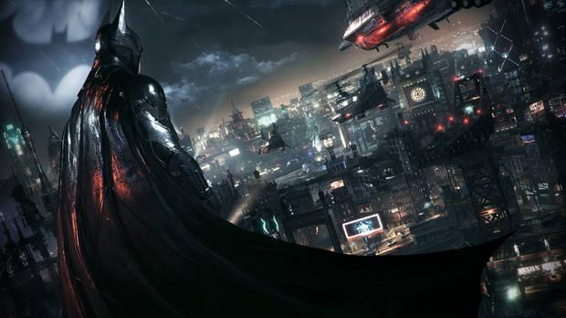

Uno de mis pasatiempos favoritos y a los que probablemente le dedico mas tiempo son los videojuegos, especialmente los juegos en linea como Apex Legends y plataformeros como Super Mario Bross
Actualmente uno de los videojuegos a los que mas timepo les he dedicado mas tiempo del poco tiempo que tengo ahora es Batman Arkham, no a uno solo sino a todos los juegos de esa saga, sobretodo Batman Arkham Knight el cual salio el y esta es una pequeña reseña del juego:
Sigue ofreciéndonos un auténtico juegazo que no solo mostraba un total respeto por el Murciélago y su universo, sino que realmente conseguía meternos en su piel para que nos sintiéramos como si de verdad fuéramos Batman.